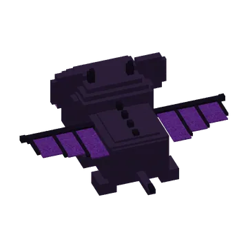
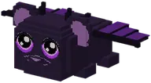
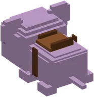

Enderguh: zwart-paars met drakenvleugels. Tem hem (1 op 8 knabbels, of 1 gefrituurde knabbel), zadel hem en vlieg!
The ender guhDe Enderguh
A black and purple guh with dragon wings, little horns and glowing purple eyes. It lives only on the Guh Peaks (about 1 in 30 guhs there) and flies around; hold kaas knabbels and it comes to you. Taming is harder: 1 in 8 knabbels, or at once with a fried kaas knabbel. A tamed ender guh is always big enough to ride: saddle it and fly! Look where you want to go and hold W, jump = up, let go = hover. Getting off in the air? You float down.
Een zwart-paarse guh met drakenvleugels, hoorntjes en gloeiende paarse ogen. Hij woont alleen op de Guhpieken (ongeveer 1 op de 30 guhs daar) en vliegt rond; houd kaasknabbels vast en hij komt naar je toe. Temmen is pittiger: 1 op 8 knabbels, of in een keer met een gefrituurde kaasknabbel. Een tamme Enderguh is altijd groot genoeg om te berijden: zadel hem en vlieg! Kijk waar je heen wilt en houd W vast, spatie = omhoog, loslaten = zweven. In de lucht afstappen? Dan zweef je naar beneden.
- WhereWaar
- Guh PeaksGuhpieken
- TamingTemmen
- 1 in 8, or fried knabbels1 op 8, of gefrituurde knabbels
PicturesPlaatjes

See alsoZie ook

GuhpiekenBiomesBiomen
Taming, riding and picking upTemmen, rijden en oppakkenMechanicsSystemen